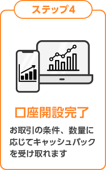

リスクを抑えながらも、
短期かつ早いペースでの取引機会
を探している人には
バイナリー取引
がオススメ！

※一般社団法人金融先物取引業協会公表個人向け店頭バイナリーオプション取引月次データ（2014年1月〜2022年12月）をもとにした当社集計調べ

※最短での取引開始には、「スマホでスピード本人確認」により本人確認書類等をご提出いただく必要があります。
※土日祝日・年末年始のお申込やお申し込みいただく時間帯、審査状況等によっては、最短日数よりもお時間を要します。
バイナリーオプションとは
初めてでも取引しやすい
3つの理由
購入操作は3ステップ
Bi-winningでは、以下の3ステップで購入できます。
PCでもスマホでも3ステップで購入できるので、初心者の方でも迷うことなく操作ができます。
-
- 1通貨ペアを選択
- 業界最多の取引銘柄から好きな
通貨ペアを自由に選択
-
- 2上がるか下がるかを選択
- 選択した通貨ペアの
価格が上がるか下がるかを選択
-
- 3投資金額を入力して購入！
- 最低金額500円から
投資可能！
 最小500円から始められます
最小500円から始められます
取引に必要な金額は500円～200,000円。少額で始められるので、最初に多くの資金を用意する必要はありません。
 リスクは購入金額と同額
リスクは購入金額と同額
バイナリーオプション取引では購入金額を超えた損失は発生しません。予測通りの結果にならなかった場合は、購入金額と同額が損失となります。
スマホでもPCでも。
どこでもお取引。
大画面のPCで情報収集もラクラク！
使いなれたＰＣブラウザからお取引
- 見やすいダッシュボード
- 業界最高のペイアウト率 最大95％
- FX・仮想通貨・米国株へ最速アクセス
日本国内銀行への
出金可能
資金へ素早く簡単にアクセスできます
以下の金融機関のインターネットバンキング口座をお持ちであれば、即時入金サービスを無料でご利用いただけます。


他の提携先を見る
安心の0円いろいろ
万が一の場合も安心
サポート無料！
お問い合わせはいつでも受け付けています。日本語対応しておりますので
ご安心ください。


口座維持費なども不要
※入金は最少額5,000円から、出金は最少額10,000円から対応しております。
最短当日※でお取引開始
スマホでスピード本人確認

- 